Unacademy / UI design internship
Airlearn.
Making language
lessons visual.
A summer of turning educator-written scripts into lesson screens and creating the images inside them. From a Finnish market square to a Korean vet’s clinic, I worked across languages within Airlearn’s existing UI.
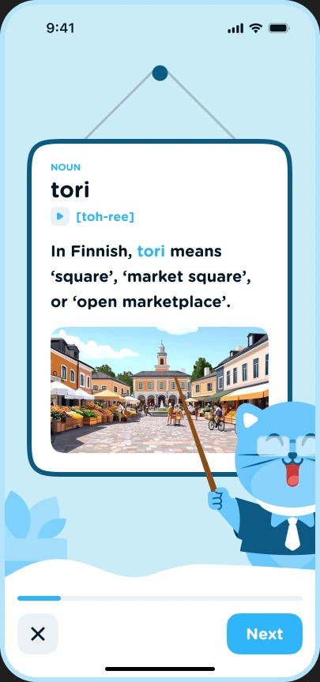
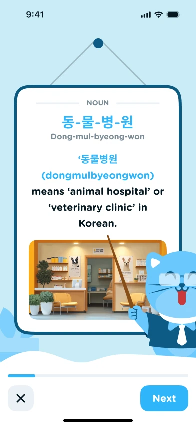
Finnish lessonsKorean lessons- My role
- UI Design Intern
- Company / Product
- Unacademy / Airlearn
- Duration
- 2 months · Summer break
- Tools
- Figma & Midjourney
01 / The role
One script.
Many screens.
A visual to make it click.
I worked on lesson screens in Greek, Finnish, Tagalog, Italian, and Korean, with most of my work in Finnish and Korean.
Educators supplied the scripts. I turned them into designs by using and modifying the corresponding Figma templates provided by the company, and generated images in Midjourney to act as visual aids.
I also worked on phone-call lessons in Russian, Mandarin, and Korean, one of the newer formats the team had introduced. Senior designers and educators reviewed the lessons for approval.
02 / Finnish lesson screens
Full Finnish page (opens in a new tab)A morning
at the market.
Vocabulary, recognition, and cultural context, connected through images.
These lessons introduce the market square, breakfast, looking for things, and getting around. I adapted the templates for vocabulary cards, image-based questions, listening, and translation exercises.
The screens below show how a visual appears first beside a new word, then as part of an exercise or a longer explanation.
A generated market-square image anchors the vocabulary card for tori.
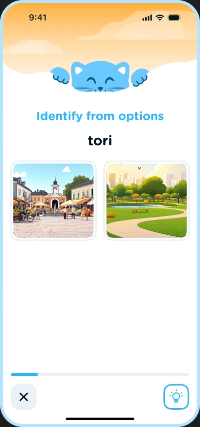
The learner distinguishes a market square from a park through image options.
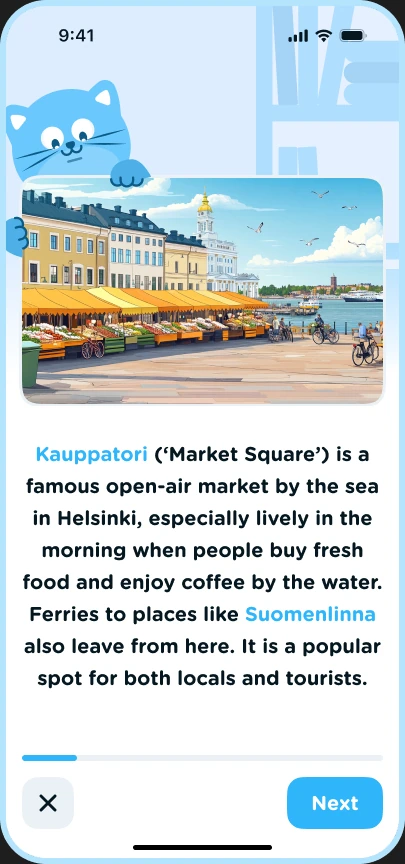
A wider scene accompanies the educator’s introduction to Helsinki’s Kauppatori.
03 / Korean lesson screens
Full Korean page (opens in a new tab)A visit
to the vet.
Hangul, romanisation, meaning, and a visual reference in the same lesson.
The selected Korean lessons cover the animal hospital, a pet carrier, symptoms, and preparing questions for the vet. My work involved adapting the existing layouts to these scripts and their supporting imagery.
Across the page, the lesson moves between vocabulary, word explanations, listening, matching, and sentence-building exercises.
The clinic image supports the introduction of 동물병원, animal hospital.
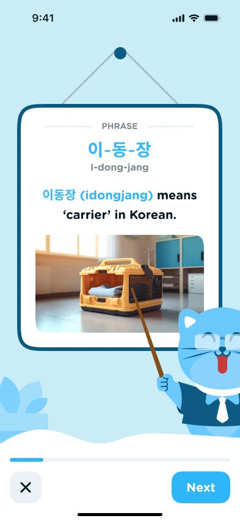
A pet carrier makes the meaning of 이동장 concrete.
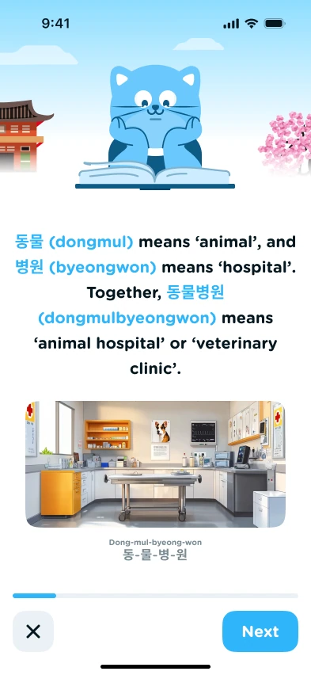
The educator’s explanation breaks down the word, alongside a veterinary-room visual.
04 / Phone-call lessons
Full sample page (opens in a new tab)Language in
conversation.
A newer format built around the rhythm of a phone call.
I worked on phone-call lessons in Russian, Mandarin, and Korean. The Mandarin samples here follow conversations about traffic, sport, and online safety, with dialogue, pronunciation support, and follow-up questions.
The company supplied the format and templates; I adapted educator-written scripts into the lesson designs.
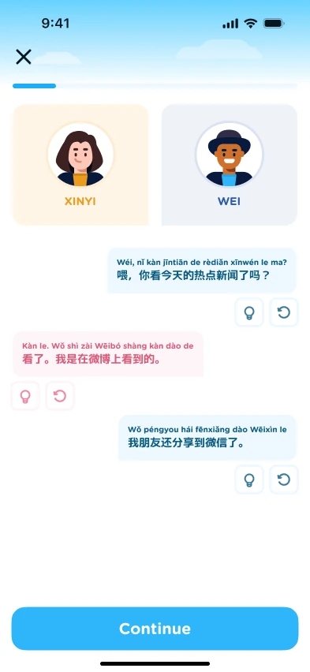
A conversation about news moves between speakers, with pinyin alongside Chinese characters.
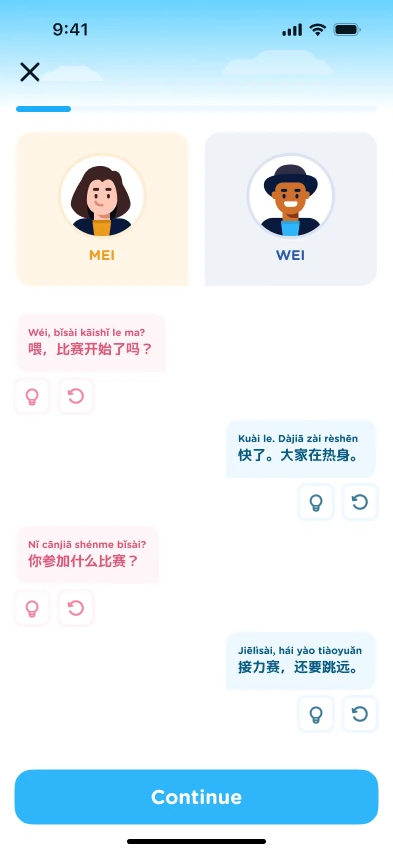
The same format carries a script about a sports competition.
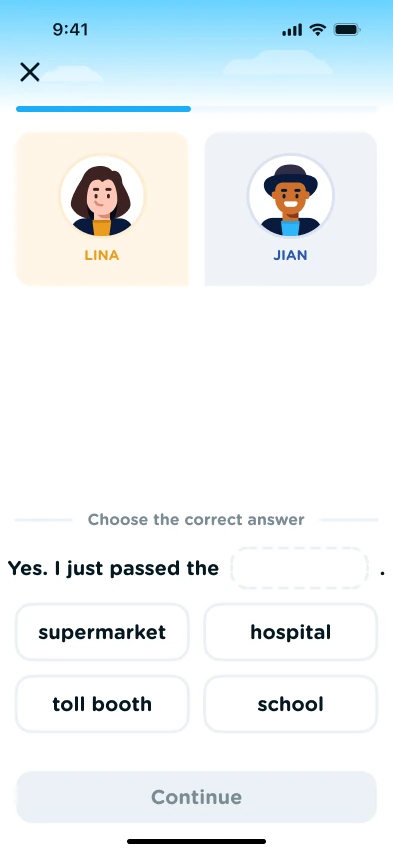
A completion prompt follows the traffic conversation.
See the company’s phone-call format reference
The separate format-flow page shows the calling interface, dialogue, comprehension, and response-building states with Spanish sample copy.
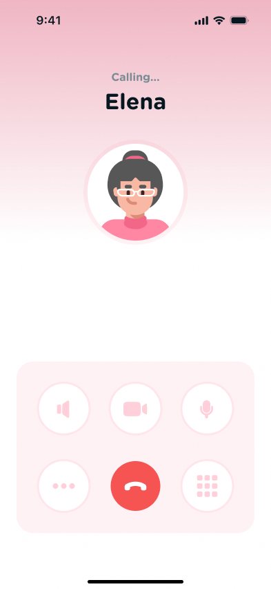
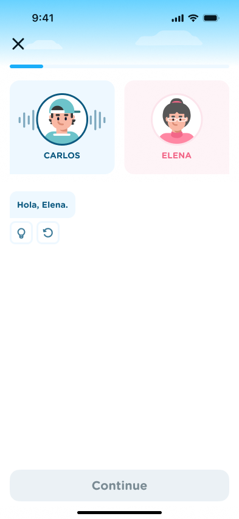
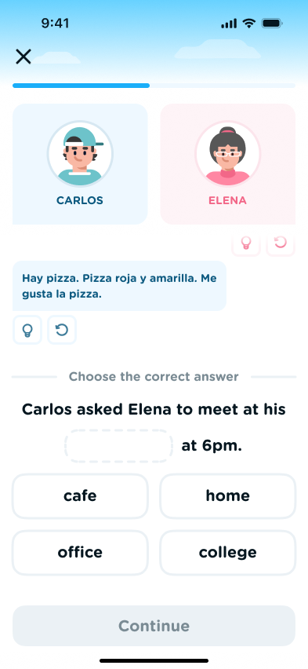
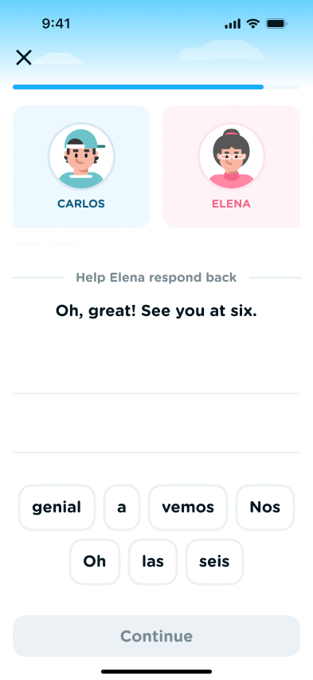
05 / Creating the visual aids
Midjourney → Figma → lesson screenThe images
inside the lessons.
I used Midjourney to generate visual aids for the lesson designs.
These images gave the scripts places, people, objects, and everyday situations to refer to. I brought them into the company’s templates as part of the lesson-screen workflow.
The market-square image below is the same image used in the Finnish vocabulary and recognition screens above. The clinic visual appears in the Korean animal-hospital lesson.
From a generated scene to a vocabulary card and a recognition question.
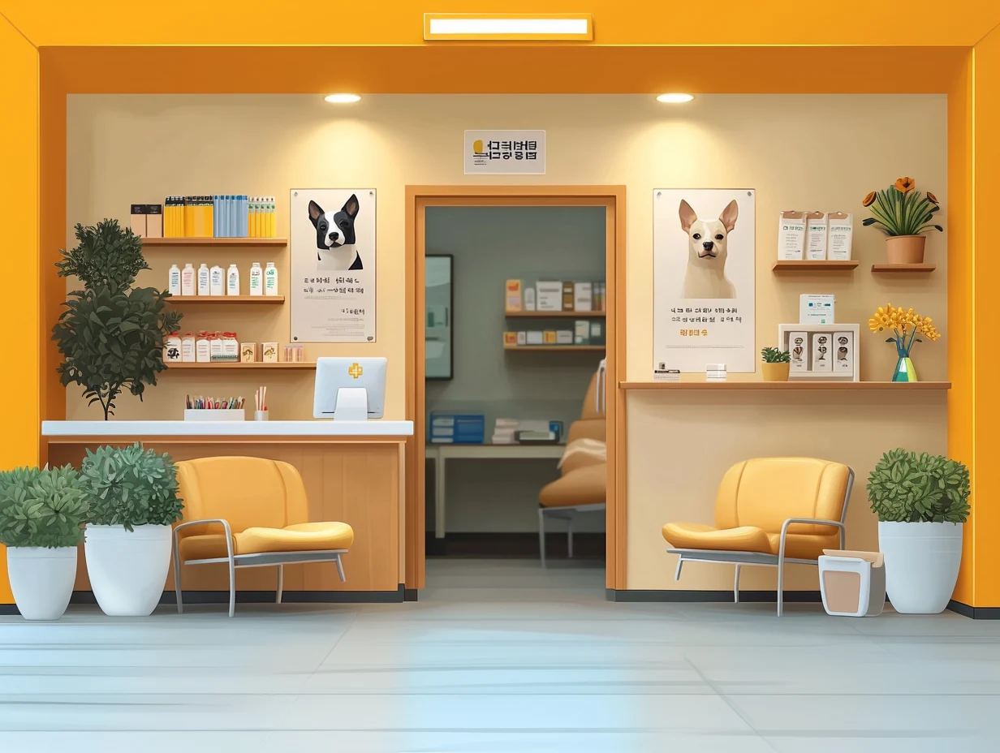
A specific setting for the animal-hospital vocabulary.
People, places, objects & everyday life.
A selection from the image collection I generated during the internship.
One summer of lesson-making.
06 / Bringing it together
A daily production workflow.
Read the script
Start with the educator’s content for the language and lesson format.
Adapt the UI
Use and modify the corresponding company templates in Figma.
Add visual aids
Generate imagery in Midjourney and bring it into the lesson designs.
Submit for review
Share lessons with senior designers and educators for approval.
My contribution: lesson-screen design, template adaptation, and Midjourney imagery. Airlearn’s base UI and templates were provided by Unacademy; the language educators wrote the scripts.